Professional
EndyMed is a lean medical-device manufacturer, so sales operations here is a broad job. I own most of the systems that carry a deal from lead to fully onboarded customer — the data infrastructure and the commercial strategy that runs on it. A few of the workstreams that matter most, kept intentionally high-level.
Existing customers were underutilized and there was no data to target them. I integrated three siloed systems — ERP, Shopify, and a cleaned client database — into a single install-base model, derived customer value and order frequency, and ran RFM segmentation to score every account.
The segments surfaced dormant accounts and the highest-value relationships, and turned re-engagement from guesswork into a prioritized, segment-specific strategy. This analysis shaped the 2026 annual operating plan.
How the model was assembled. The hard part wasn't the RFM math — it was building one trustworthy dataset out of three systems that didn't talk to each other, joined on a single shared key.
The output. This analysis became the 2026 re-engagement strategy — presented to leadership. Redacted deck below.
Deck is redacted for the public site — segment counts, dollar values, and account details removed. Full version available on request.
Built EndyMed's US CRM in Monday.com from nothing — standardized lead and deal boards, defined pipeline stages, automated territory routing, and a managerial sales dashboard. Automated weekly sales reporting across Zapier, Power Automate, Office Scripts, and Excel.
For the first time leadership could see the full pipeline across 500+ leads in one place, and every territory manager got a standardized KPI and deal-status report without the manual work behind it.
The system, in practice. A walkthrough of the CRM I built in Monday.com — from lead capture to a live leadership dashboard. All customer data is redacted.
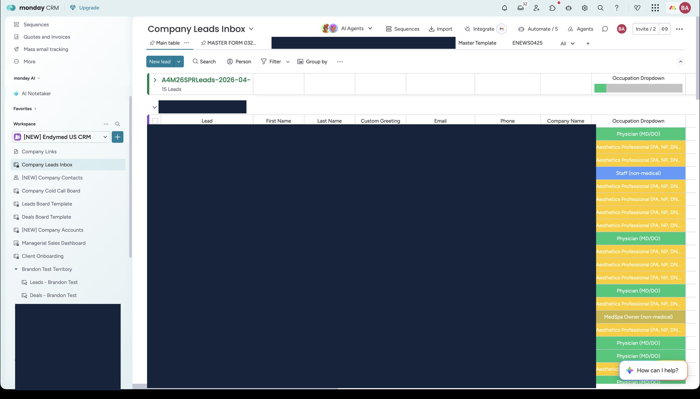
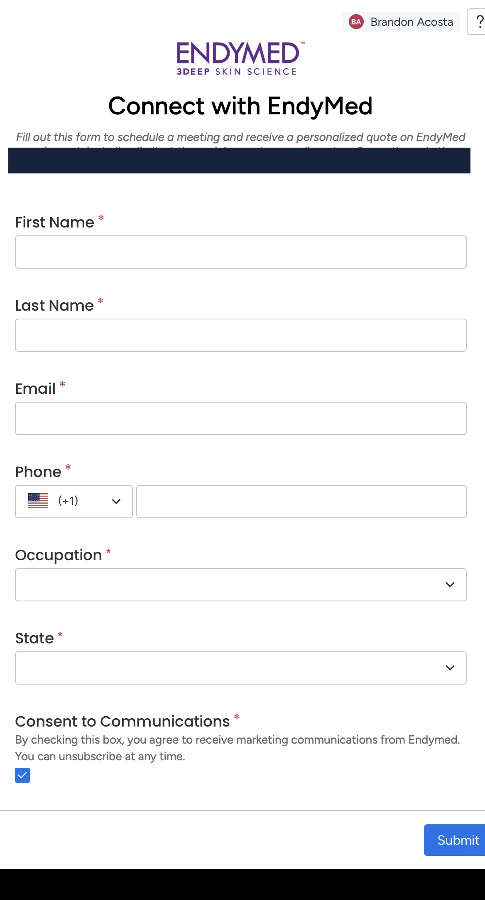
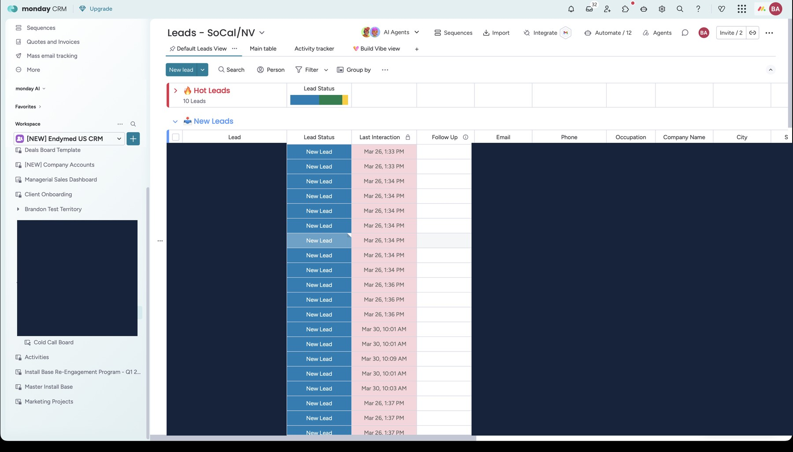
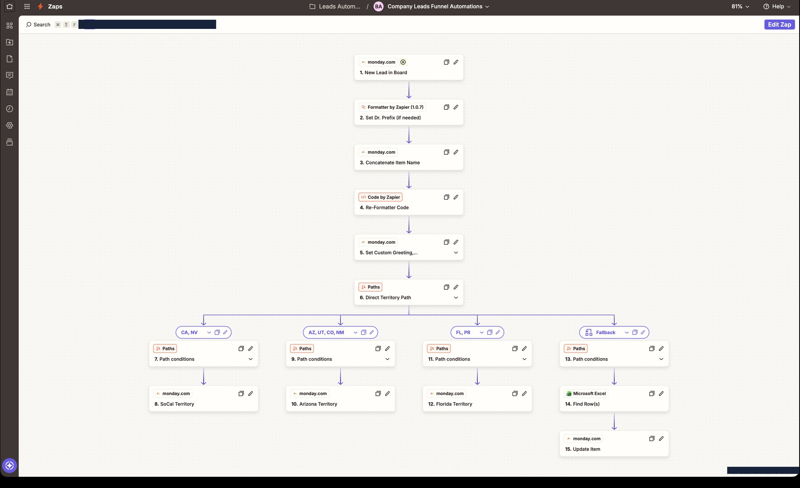
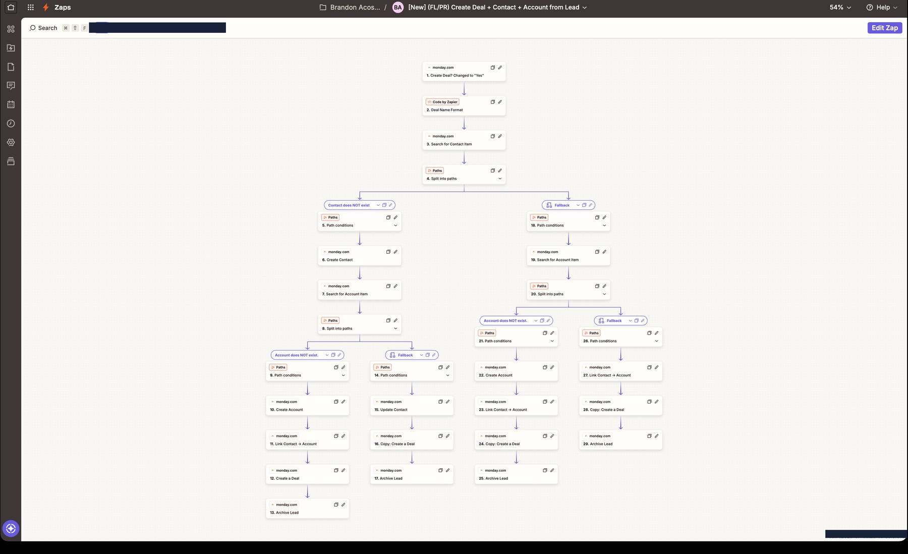
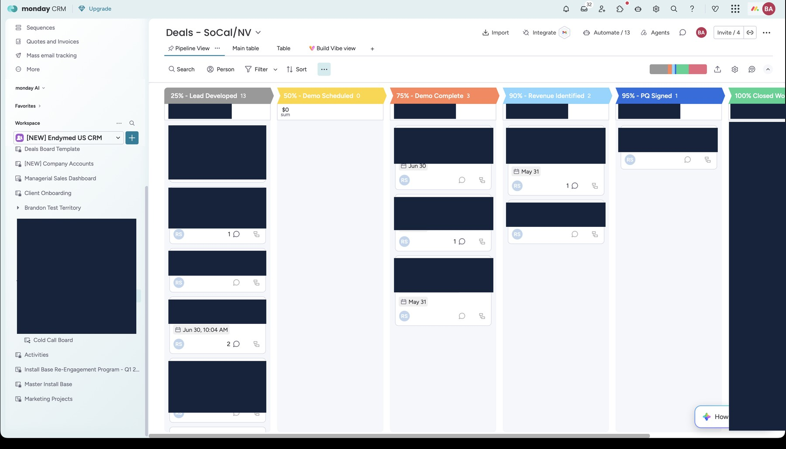
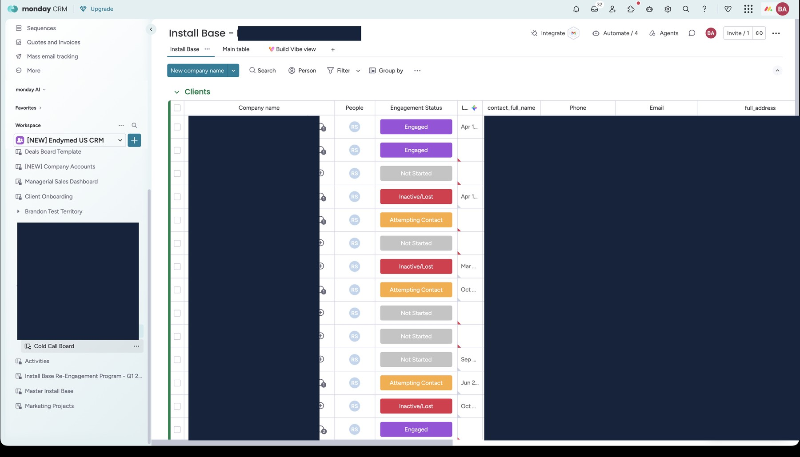
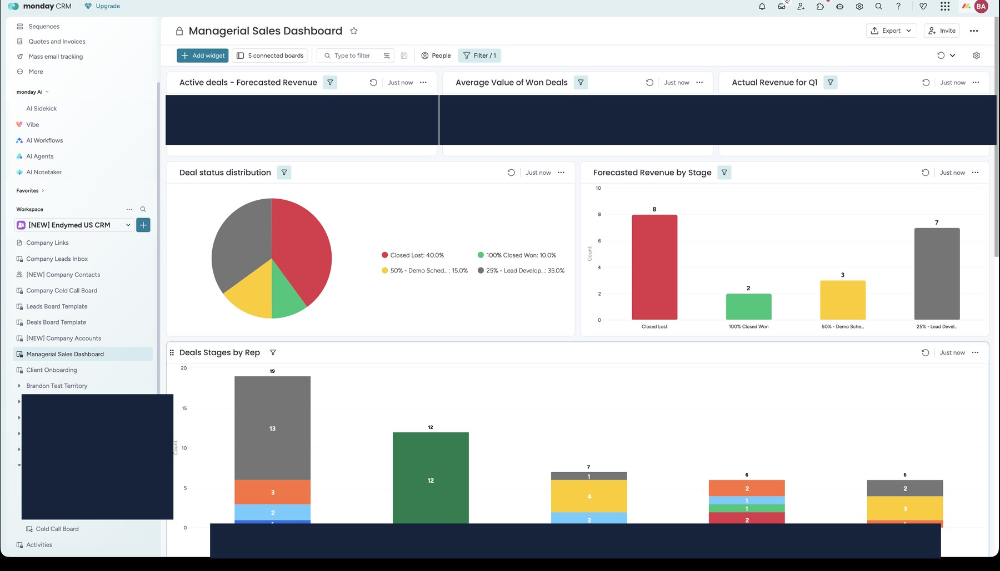
Screenshots are from the live CRM with all customer names, emails, phones, addresses, and deal values blacked out. Click any image to view it larger.
Built a client onboarding board that triggers when a deal is signed and coordinates each capital-equipment order across fulfillment, financing, and clinical training — from order through shipment, install, training, certificate issuance, and marketing handoff.
Marketing, fulfillment, and clinical teams finally shared visibility into every deal in flight, giving customers a consistent start instead of a set of disconnected handoffs.
The protocol. Every capital-equipment deal runs the same seven-step path, coordinated across operations, clinical training, fulfillment, and bookkeeping. Each step has a defined trigger, owner, and board stage.
On order confirmation from the 3PL warehouse partner and approval in the ERP, the project is marked "Order Confirmed" and a welcome email goes out with the clinic-locator form and marketing folder.
Tracking is sent to the client automatically on ship. The board moves to "Shipped," the deal to "Closed Won," and the delivery date is logged to trigger the installation email.
Schedule the install, test the device, collect a signed installation form, and verify the serial number against the order; the board moves to "Installation Complete."
Reach out for three days of availability within the next few weeks and set the date; the board moves to "Training Scheduled."
Send a confirmation email with a preparation checklist, trainer contact, and pre-education resources; the board moves to "Training Confirmed."
Run the full-day training, send the post-training email (consumables reorder, support contacts, feedback form), and request certification; the board moves to "Training Completed."
Send a check-in email, confirm the client is satisfied and supported, and close the project.
The system behind it. The protocol runs on one shared board with supporting automation and standardized templates. All customer data is redacted.
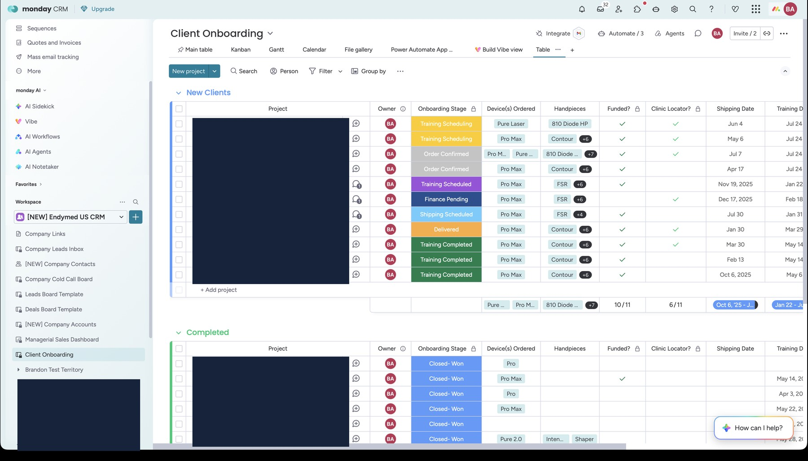
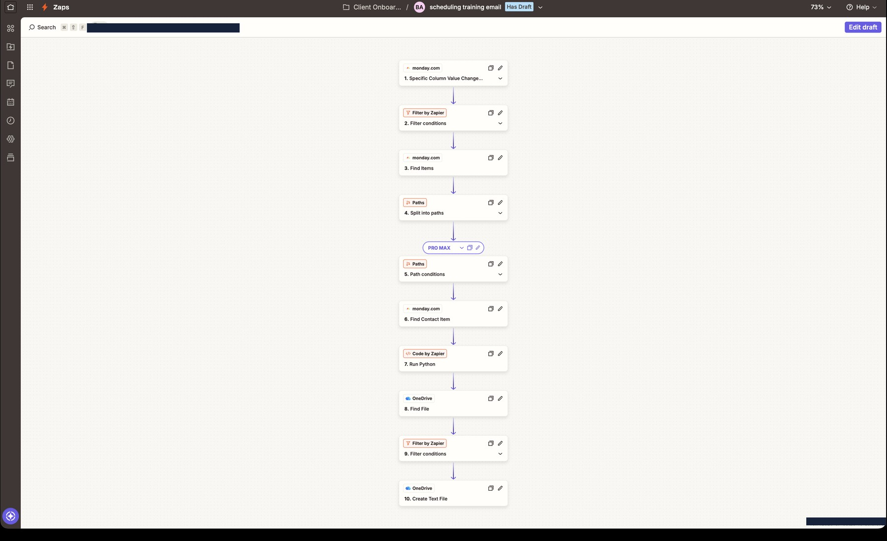
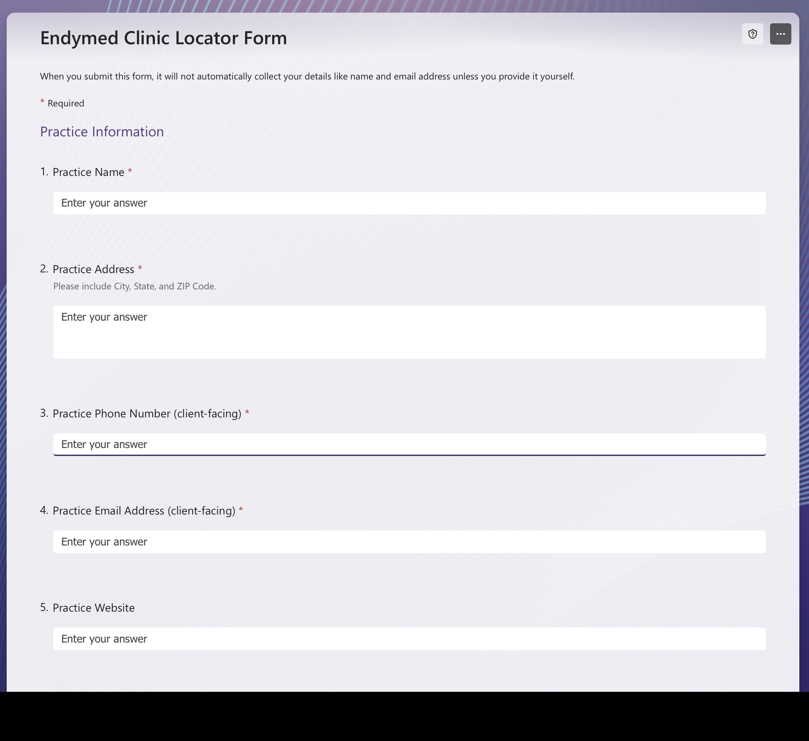
Standardized communications. Each step has a template so the client experience is consistent regardless of who sends it. For example, the training-scheduling email:
Congratulations on adding the EndyMed PRO MAX system to your practice. Your next step is to schedule your in-person clinical training — a hands-on, full-day session with your assigned clinical trainer (typically 9:00 AM–4:00 PM).
Please reply with:
a) two to three full-day dates that work for your team over the next two weeks, and
b) the names and roles of each participant.
A preparation folder with the training schedule, prep guide, and protocols is linked below.
Recreated from the live template — client and trainer details shown as sample placeholders.
As the team and product line grew, I wrote and standardized the operating procedures that keep post-sale operations consistent — a portfolio of SOPs across order management, clinical training, service, and events, each defining the trigger, steps, owner, and systems involved.
Documented procedures replaced tribal knowledge, controlled logistics and service costs, and let anyone on the team run a process the same way — essential for a lean operation covering a national footprint.
The portfolio. A representative sample of the SOPs I developed and standardized.
Signed PQ → ERP entry → inventory & serial verification → shipment → install & training → invoicing → onboarding.
Prepare customers and trainers for successful installs — resource folders, scheduling, prep materials, and certificates.
Standardize defective-consumable claims while cutting shipping cost — default to store credit, escalate repeats.
Consistent handling from lead intake → territory → deal → pipeline stages → onboarding handoff at Closed Won.
Control logistics cost — ground by default, approval thresholds for expedited, documented service expenses.
Standardize post-event handling — import, dedupe, assign territory, trigger follow-up automation.
An example — the Tip Replacement Request process. Each SOP defines the full workflow end to end. For instance:
Collect the issue details, tip type, quantity, lot number, and supporting photos.
Determine warranty coverage versus manufacturing defect, shipping damage, or misuse.
Default to Shopify store credit rather than shipping a physical replacement, unless immediate patient care requires it.
Log the order, resolution, credit amount, approval, and repeat history in Zendesk.
Route repeat or high-value issues to management for review.
Authored EndyMed's quarterly operations and marketing roadmaps and built the 2026 annual operating plan analysis and deck — market analysis, prioritized initiatives, measurable targets, and resourcing asks — which leadership presented to global stakeholders.
Own US marketing direction and prioritization, shifting lead generation from physical outreach to digital — QR-code flyers, landing pages as campaign source pages, and segmented email — while coordinating contractors on execution.
Alongside these, I run event operations for 30+ trade shows and conferences a year, with lead capture and source tracking that feeds straight into the pipeline.
Digitalizing the marketing. I shifted lead generation from physical outreach to digital — QR-code flyers and provider case studies that drive to dedicated campaign landing pages, backed by segmented email. The flagship example is the Launch Support Program:
Campaign flyers I designed and the decks I used to roll these out to the sales team are being prepared for this section — see the note in chat about which pieces to feature.
As Office Manager at Med Results, an aesthetic medical device distributor, I ran order and event operations and helped run national training summits end to end. This portfolio is embedded live from Canva, so it always reflects the latest version.